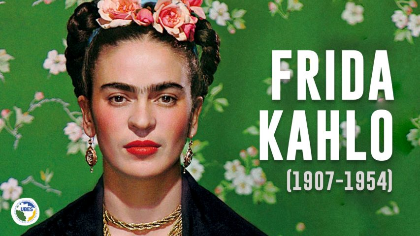

Na imagem Frida Kahlo aparece em um fundo verde florido, com flores a enfeitar seus cabelos.
Sem padrões e rótulos: uma mulher vanguarda
Excêntrica. Ímpar. Exótica. Talvez essas sejam três das principais características atribuídas à artista surrealista. Como, então, ela deixou seu legado sobressair às telas? Frida nunca se importou com padrões estéticos ou convenções sociais que disponibilizavam às mulheres. Apesar de nunca ter se intitulado como feminista, ou até mesmo pintado obras com esse cunho explícito, durante toda sua vida necessitou se impor frente ao patriarcado velado de sua posição social. Seja pelas condições físicas que não lhe permitiam ser como as moças da época, ou pelos fortes traços de seu rosto, o fato é que nunca quis se dedicar a uma objetificação corporal, muito menos esconder sua verdadeira essência; isso pode ser visto nesta foto em família, em que ela - rejeitando o esperado traje feminino - se veste com um terno de seu pai.Também, e como já mencionado, sua marca cativa posteriormente se tornou o uso das longas saias simbolizando a cultura mexicana, chamadas de roupas tehuanas. Além de caricata e memorável, sua abolição pelo cumprimento de normas de beleza, como retirar os pêlos da sobrancelha, trouxe para a atualidade certo empoderamento, incentivando a livre escolha de mulheres sobre seus corpos e desejos. Assim, também foi pioneira sobre sua sexualidade e relação matrimonial, pois jamais escondeu sua bissexualidade e seu relacionamento aberto com Diogo Rivera, que inclusive tinha conhecimento de suas outras relações. Ainda que no início o casamento tentou persistir em certa normatividade e conservadorismo esperado da época, os gênios fortes de Rivera e Frida tornaram, posteriormente, impossível o cumprimento de padrões.
O feminismo de Frida Kahlo e a arte
Livre e decidida na vida, complexa e subjetiva na arte. Frida Kahlo ganhou espaço e notoriedade por suas obras surrealistas, sobretudo retratando o universo da mulher em relação aos próprios acontecimentos de sua trajetória pessoal. Vejamos uma das suas principais pinturas:

A obra apresenta duas mulheres sentadas em um banco sem encosto, uma ao lado da outra, de mãos dadas e conectadas por um só fio que entrelaça seus corações.Em meio a um céu escuro e tempestuoso, as duas Fridas fazem parte de um único sentimento, uma vez que estão olhando para a mesma direção. Uma com vestido branco, de gola alta e coração dilacerado; a outra, vestida com as roupas típicas e seu coração aparentemente inteiro. A da direita carrega na mão uma tesoura, simbolizando a ruptura; a da direita uma foto de Diego Rivera, seu marido. Nesse quadro, é possível perceber a cruel vivência de Frida com seus sentimentos, de modo a demonstrar que, mesmo dilacerada, ainda permanece unida a si mesma, como forma de força.